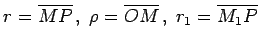
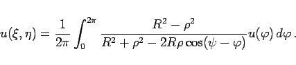
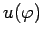
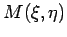
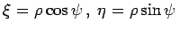

Inhalt Index DeskTop Bronstein

 Differentialgleichungen Partielle Differentialgleichungen Lineare partielle Differentialgleichungen 2. Ordnung Integrationsmethoden für lineare partielle Differentialgleichungen 2. Ordnung
Differentialgleichungen Partielle Differentialgleichungen Lineare partielle Differentialgleichungen 2. Ordnung Integrationsmethoden für lineare partielle Differentialgleichungen 2. Ordnung


Konstruktion der Greenschen Funktion für das Dirichletsche Problem der
LAPLACEschen Differentialgleichung
 |
(9.99a) |
für den Fall, daß das betrachtete Gebiet ein Kreis ist (s. Abbildung).
Die GREENsche Funktion lautet
wobei  und R der Radius des betrachteten Kreises ist. Die Punkte M und M1 liegen in bezug auf den Kreis symmetrisch, d.h., beide Punkte liegen auf demselben Radiusstrahl, und es gilt
Mit der angegebenen Formel (9.97e) zur Lösung des DIRICHLETschen Problems ergibt sich nach Einsetzen der Normalenableitung der GREENschen Funktion und einigen Umformungen das POISSONsche Integral
|  | (9.99d) |
Die Bezeichnungen sind die gleichen wie oben. Mit  werden die auf dem Kreisrand vorgegebenen Werte von u beschrieben. Für die Koordinaten des Punktes  gilt: .